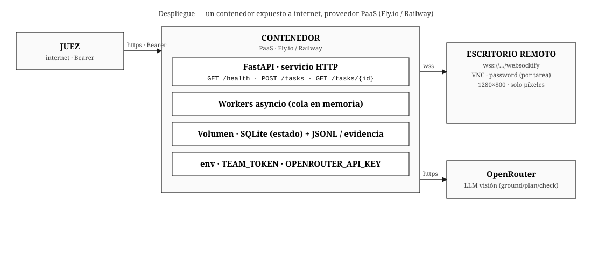

El agente que opera lo que no tiene API
Sistema legacy sin documentación ni proveedor, controlado por un agente de visión sobre un escritorio remoto — únicamente con píxeles.
DISEÑO
El qué y el por qué: el problema, sus límites y supuestos, y las decisiones de comportamiento del agente.
1.1 · Problema
Un sistema de gestión de 15 años, sin API, sin documentación y sin proveedor. Todo se opera a mano: clics, formularios, ventanas emergentes, reportes exportados uno por uno. Se necesita un agente que aprenda a usarlo como un empleado nuevo y ejecute tareas en lenguaje natural, incluso las que nunca ha visto. Hay 5 sistemas como este: el agente debe adaptarse a cualquiera.
1.2 · Supuestos, casos difíciles y alcance
Supuestos (y por qué los hacemos)
- El escritorio siempre llega por
wss://…/websockify+ contraseña — el canal es VNC, no HTTP. - Resolución fija 1280×800, una sola pantalla — el grounding asume coordenadas estables.
- La UI responde a interacción estándar (menús, formularios, tablas), sin arrastrar/soltar complejo.
Casos difíciles (previstos)
- Ambigüedad (dos "Ana Torres") → hay que detectarla y reportar
fallida, no adivinar. - Popups / modales imprevistos a mitad de un batch.
- Fechas relativas ("ayer", "septiembre") contra el reloj de la app.
- Texto que concatena si no se limpia el campo antes.
Gotchas de interacción (observados operando el escritorio)
- Repintado hasta 1s tras un clic → esperar antes de capturar (captura inmediata trae la pantalla vieja).
- Clic con <100ms entre bajar y soltar se ignora → mantener el botón ≥100ms.
- Escribir sobre un campo con texto concatena →
Ctrl+A(seleccionar todo) antes de escribir.
Lo que dejamos fuera (y por qué)
- No leer el DOM aunque la app sea web: el brief lo prohíbe y el escritorio de evaluación no lo expone.
- No soportar multi-monitor ni resolución variable: la evaluación es fija en 1280×800.
- No persistir memoria entre tareas: cada tarea parte de un escritorio limpio.
- No usar proveedores externos de computer-use: solo LLM por API (restricción literal).
1.3 · Restricciones y pivote central
Restricciones
- Sin herramientas ni proveedores que hagan esto por nosotros (solo LLM por API).
- Las apps se acceden igual que la de pruebas: por el escritorio noVNC.
- No se puede ver el DOM — solo la pantalla (píxeles).
El pivote
observe(): de leer el DOM → capturar el framebuffer.act(): de selectores → coordenadas + teclado.- El reto real: grounding — traducir una intención a un píxel, sin estructura.
1.4 · Comportamiento del agente (híbrido)
Tres fases que minimizan llamadas al modelo — la palanca de costo y latencia.
PLAN · 1 llamada al inicio
Pantalla inicial + tarea → plan de alto nivel en hitos (sin coordenadas). Se guarda como contexto persistente.
{"plan": ["Navegar a Ventas", "Abrir reporte", "Exportar CSV"]}
ACT · batching
Una llamada por cambio de pantalla, no por clic. El modelo devuelve una lista de acciones a ejecutar antes de volver a observar.
{"actions":[{"op":"click","x":0.12,"y":0.06},
{"op":"type","text":"oct"},{"op":"wait","ms":800}],
"stop_if_changed":true}
CHECK · verificación en cascada (barato → caro)
1) diff de imagen (hash de región) → 2) OCR (modelo barato) → 3) LLM visión solo si los anteriores fallan. Así cada verificación cuesta lo mínimo.
Contrato del resumen
- Pregunta →
respuesta: <valor>(el número primero en la línea). - Dos datos →
respuesta: a; b(mismo orden en que se preguntan). - Tarea que debe fallar → el resumen nombra los datos que lo explican (
claves_razon). - Nunca repetir la contraseña del escritorio ni otros secretos.
1.5 · Zoom / recorte inteligente
Por qué
Cada screenshot cuesta tokens. Enviar 1.6 Mpx en cada paso agota los $50 y los 5 minutos.
Cómo
- Ventana de atención alrededor de la zona de interacción (~400×300 → ~12× menos tokens).
- Pantalla nueva → full downscaled (~800px) para orientación.
- Texto chico → crop de detalle para legibilidad.
1.6 · Routing de modelos (3 niveles)
| Rol | Modelo | Precio ($/M) | Por qué |
|---|---|---|---|
| PLAN (razonamiento) | deepseek-v4.1-flash | 0.11 / 0.34 | texto, barato, planea hitos |
| GROUND (coordenadas) | bytedance/ui-tars-1.5-7b | 0.10 / 0.20 | modelo GUI: mira y devuelve el punto |
| CHECK (verificar/OCR) | inclusionai/ling-3.0-flash-vl | 0.021 / 0.062 | visión barata, alto volumen |
| HARD (pantallas difíciles) | qwen3-vl-235b-a22b | 0.21 / 1.90 | fallback cuando lo barato falla |
Regla de cuota: ante 429 el modelo se marca agotado y se excluye el resto del día. Retry/backoff + jitter.
1.7 · Presupuesto de los 5 minutos
Cortes: timeout ≤ 5 min y max_steps ≤ 25, el que llegue primero. Se reservan ~30s para el resumen.
1.8 · Manejo de excepciones
| Situación | Detección | Respuesta |
|---|---|---|
| Pantalla no cambió | hash igual al previo | reintentar 1× con otro enfoque, luego re-plan |
| Popup / modal inesperado | stop_if_changed | cortar batch, re-observar con el modal visible |
| Estancamiento | 3 pantallas iguales | forzar re-plan desde cero |
| Coordenadas fuera de rango | clamp + warning | pedir coords corregidas |
| Tiempo restante < 30s | deadline | resumen parcial + terminada/fallida |
| Red/VNC caído | excepción socket | reconectar, 2 reintentos, luego fallida |
1.9 · Plan para medir (antes de construir)
Validación concreta y reproducible, con oráculo objetivo, antes de escribir el servicio final.
Casos de prueba (las 5 tareas oficiales)
| Id | Instrucción (resumida) | Tipo | Resultado esperado |
|---|---|---|---|
| E1 | Registrar cliente "Papelería Los Andes" | crear | 4 campos exactos, sin duplicados |
| E2 | Corregir dirección de "Distribuciones El Faro" | actualizar | 1 campo update |
| E3 | ¿Cuántas facturas vencidas de "Ferretería Ruiz"? | pregunta | respuesta: 45 |
| E4 | Exportar pedidos entregados en septiembre 2026 | exportar | filtros estado + fechas |
| E5 | Cambiar teléfono de "Ana Torres" (dos homónimas) | ambigua | fallida + claves_razon |
Cómo se evalúa (3 chequeos)
- Cambios esperados: la app quedó con los cambios exactos.
- Sin acciones fuera de la tarea (una de más = destructiva).
- Sin registros duplicados.
Oráculo: POST /__reset + POST /__check (pass/fall por chequeo, sin revelar valores).
Métricas (umbral de éxito)
- Tasa de éxito: 5/5 tareas correctas.
- Costo por tarea: < $0.05.
- Pasos por tarea: eficiencia del batching.
- Grounding accuracy: coords a <20px del target.
- Latencia de pantalla: shot → acción.
1.10 · Observabilidad
Cada paso genera una línea JSONL (trazable, barata, redacta secretos):
{"ts":"…","task_id":"…","step":3,"phase":"act","actions":2,
"model":"ui-tars-1.5-7b","tokens_in":1240,"cost_usd":0.00016,
"screenshot_sha":"a3f9…","latency_ms":1450,"result":"ok"}
- JSONL por tarea + screenshots por paso (JPEG).
- Evidencia descargable en
.zip(para video y debrief). - Redacción automática de
password,Bearer,OPENROUTER_API_KEY.
1.11 · Trade-offs (qué descartamos y por qué)
| Decisión | Elegido | Alternativa descartada | Por qué |
|---|---|---|---|
| Transporte | asyncvnc + puente WS↔RFB | Playwright sobre el canvas noVNC | más capas (browser→canvas→JS→websockify), más lento, y no da acceso al DOM real |
| Agente | híbrido plan + batched act | ReAct puro (una acción por llamada) | 3× más llamadas → más tokens y más tiempo en los 5 min |
| Coordenadas | normalizadas 0–1 | píxeles absolutos | se rompen si cambia la resolución del escritorio |
| Cola | asyncio en memoria (1 proceso) | SQS + Lambda | el WS VNC vive 5 min y el cold start come presupuesto; no necesitamos escala |
| Verificación | cascada hash → OCR → LLM | LLM visión para todo | 10× más caro por cada check |
ARQUITECTURA
El cómo se conecta: los componentes del sistema y el flujo de datos entre ellos.
2.1 · Vista lógica

2.2 · Componentes
| Módulo | Responsabilidad | Entrada | Salida |
|---|---|---|---|
api/ | HTTP + auth Bearer + cola | POST /tasks | 202 {task_id} / GET /tasks/{id} |
store/ | persistencia de tareas | task_id | {estado, resumen, …} |
queue/ | cola de tareas en memoria | task_id | despacho a worker |
desktop/ | conexión VNC + puente WS↔RFB | URL + password | capture(), input() |
vision/ | crop, diff, OCR barato | framebuffer RGBA | región recortada, hash, texto |
model/ | routing + llamadas OpenRouter | mensajes + imágenes | JSON estructurado |
agent/ | loop plan→act→check | tarea NL + desktop | estado final + resumen |
logs/ | observabilidad | paso ejecutado | línea JSONL + artefacto |
2.3 · Transporte al escritorio (validado)
POST /tasks como {"escritorio": {"url": "wss://…/websockify", "password": "…"}}
(el puerto 5900 no está abierto). El agente habla RFB a través de un puente: abre el WebSocket con
subprotocolo binary y le presenta a asyncvnc un stream reader/writer. Probado sobre el
escritorio real: framebuffer 1280×800, screenshot ~1s, coordenadas 1:1 con input VNC. El clic se emite con ≥100ms de
pulsación (porque asyncvnc.click() no lo hace) y se espera ~1s antes de capturar.
2.4 · Despliegue
Un contenedor único en un PaaS con capa gratuita (Fly.io / Railway) con FastAPI + pool de workers
asyncio. Sin SQS ni Lambda: el WebSocket VNC vive 5 min y el cold start de Lambda comería presupuesto. Base de tareas
en SQLite sobre un volumen. Los secretos (TEAM_TOKEN, OPENROUTER_API_KEY) van por variables de
entorno, nunca en el repo.
